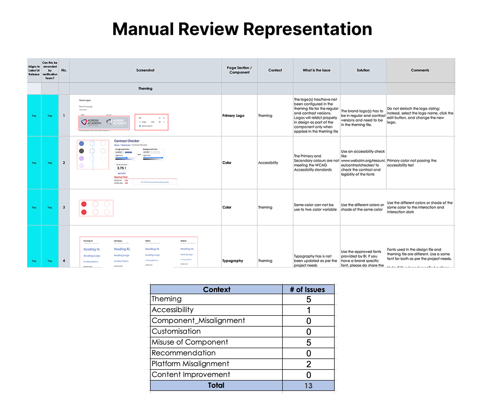
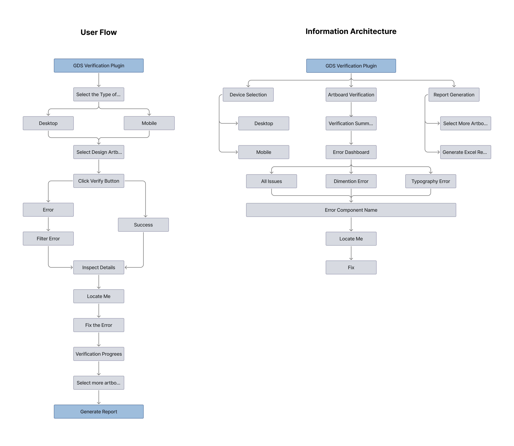
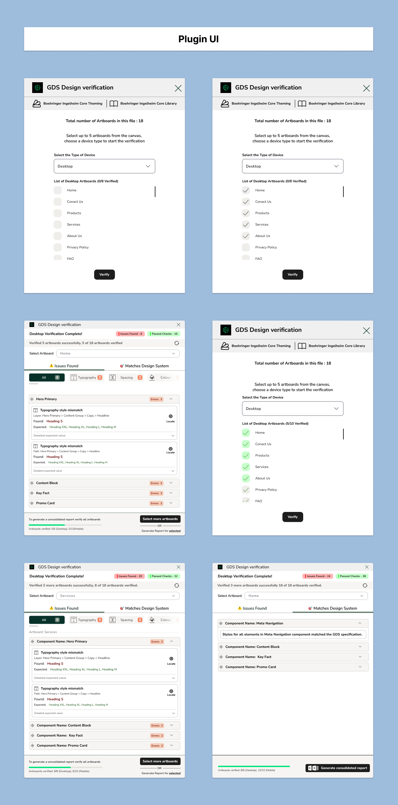
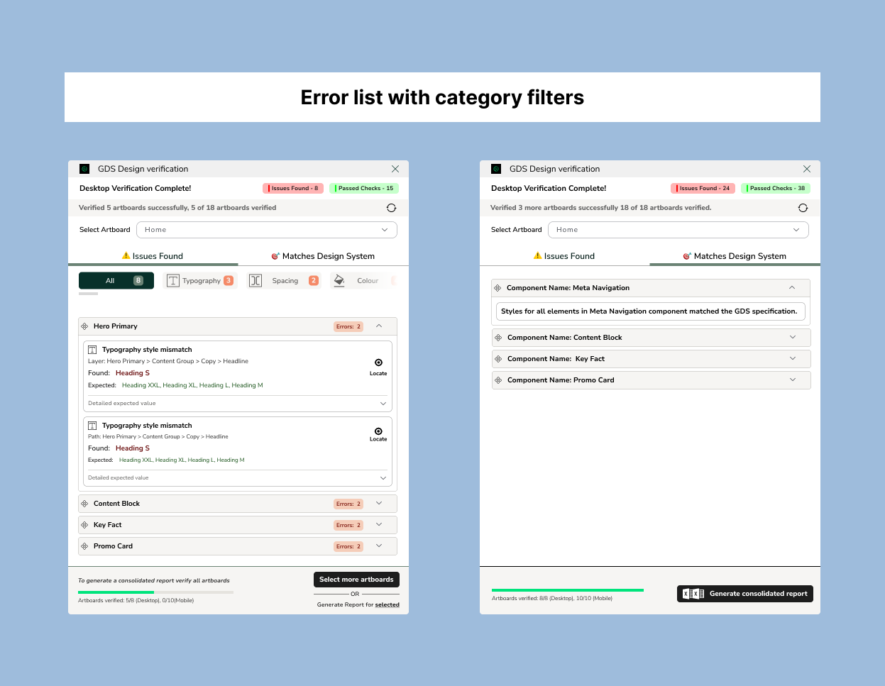
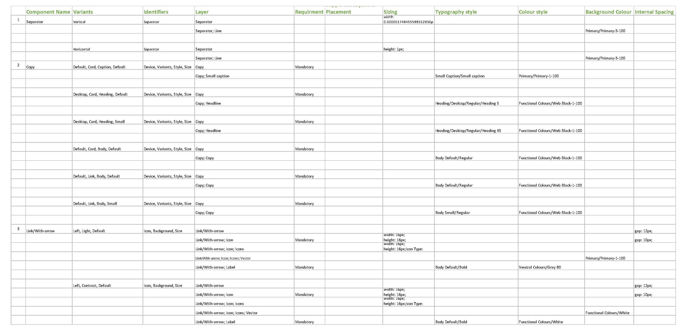

Project Overview
The plugin UI is designed to help designers verify their designs against predefined design system rules without depending on manual reviews. It focuses on clarity, speed, and actionable feedback while handling complex validation logic in the background.
This case study highlights UI decisions, UX flows, and business value, making it suitable for real-world enterprise design system teams.

Problem Definition
Design system violations are usually identified through manual design reviews, which are time-consuming and inconsistent. Designers often receive feedback late, without clear guidance on where or how to fix issues.
Core UX Problem
- Designers depend heavily on senior reviewers
- Feedback is scattered across comments and tools
- Difficult to track issues across multiple artboards
- No structured visibility into design quality
Opportunity
- Allows designers to self-verify
- Clearly explains what is wrong and why
- Reduces review cycles
- Scales across desktop and mobile designs

UX Goals
- Enable designers to verify designs independently
- Reduce cognitive load during design reviews
- Provide clear, actionable error feedback
- Support both Desktop and Mobile workflows
Success Metrics
- Reduced review time per artboard
- Faster issue resolution
- Higher design system compliance rate
- Improved designer confidence and autonomy
Target Users
Primary Users UI/UX Designers (Junior to Senior)
Secondary Users: Design Leads, Design System Managers
Tertiary Users: Developers, QA (via exported reports)
Platform & Technical Context
This verification tool is designed as a Figma plugin, allowing designers to validate their work directly inside the design environment without switching tools.
Technology Context (High-Level)
- Plugin UI designed in Figma
- Plugin logic powered by JSON-based rule definitions
- JSON is generated and maintained from structured Excel sheets
The technical details are intentionally abstracted in the UI so designers can focus purely on fixing issues, not understanding implementation complexity.
Design Process Overview
- Understanding existing manual review workflows
- Identifying repeatable design system checks
- Defining rule-to-design mappings
- Structuring UX flows for clarity and speed
- Designing error-first experiences
- Iterating based on usability feedback

Key UX & UI Design Decisions
1. Device-First Selection
Design system rules differ for Desktop and Mobile. Placing device selection at the start prevents confusion and ensures contextual validation.
2. Artboard List with Multi-Select
Designers rarely work on single screens. Multi-artboard selection reflects real workflows and enables batch verification.
3. Summary Before Details
Showing total Errors and Success first gives designers a quick health check before diving deeper.
4. Tab-Based Error Management
Separating Errors and Success avoids clutter and keeps focus on fixes.
5. Category Filters
Typography, Color, Spacing & Padding, Dimensions, Component rules

Error Card Structure
- Component name
- Number of errors in the same component
- Error category (typography, color, spacing, etc.)
- Layer name
- Property checked
- Found value vs Expected value
- Locate Me button to jump to the exact layer
Why This Matters
- Removes guesswork
- Saves navigation time
- Encourages immediate fixing
- Builds trust in automated validation

Backend Rule System
Design system rules are authored and maintained in a structured Excel file by the design system team.
Rule Structure
- Component name
- Layer name
- Variant
- Typography (font family, size, weight, line height)
- Padding & Spacing
- Gap values
- Color tokens
Progress Indicator
- Total artboards verified
- Desktop vs Mobile count
- Report generation status
JSON Conversion Layer
The Excel rules are converted into JSON format, which the Figma plugin consumes for validation.
Validation Logic (Conceptual)
- Plugin reads selected artboards
- Extracts layer properties from Figma
- Compares values against JSON rules
- Returns pass or error states to the UI
UX Benefit
- Rules can be updated without redesigning the plugin UI
- Consistent validation across teams and files
- Easy scalability as design systems grow

Verification Output & Reporting Experience
Why Excel Reports?
- Easy sharing with stakeholders
- Developer-friendly reference
- Audit-ready documentation
The report includes:
- Artboard name
- Device type
- Component
- Error category
- Found vs Expected values
- Status

Usability Outcomes
- Designers fix issues faster with precise navigation
- Reduced back-and-forth with reviewers
- Improved trust in design system rules
- Higher adoption of the plugin across teams
Business Impact
- 60–70% reduction in manual review time
- Scalable design governance without increasing headcount
- Improved design-to-development handoff
- Stronger design system compliance
Key Learnings
- Designers prefer actionable feedback over generic warnings
- Navigation to exact layers is critical for adoption
- Categorization significantly improves efficiency
Future Enhancements
- Real-time validation while designing
- Severity levels for errors
- Jira / DevOps integration
- Version comparison between design updates
Final Thoughts
This GDS Verification Plugin UI design demonstrates how thoughtful UX can simplify a highly complex design governance problem.
- Clear step-by-step flows
- Actionable error feedback
- Strong visual hierarchy
- Scalable system thinking
the plugin empowers designers to own design quality while supporting business scalability.
This case study reflects my ability to design enterprise-ready UX, balance usability with system constraints, and translate abstract design system rules into intuitive user experiences.